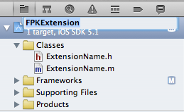

Create a new FastPdfKit Extension
Empty project to create your own FastPdfKit Extension.
Get Started
The first steps needed are to change the Extension name to the chosen one:
- Create a copy of the FPKExtension folder;
- Open the FPKExtension project in Xcode;
Rename the project to your extension name;

Rename the ExtensionName .h/.m documents;
- Replace the placeholders
ExtensionNamewith the extension name;
Define the prefix that your Extension support:
- Replace the placeholders
prefixwith the supported prefix(es) likehttp;
Start writing your code:
- Add your code from line 20 on the .m file.
Build
Warning: always perform a Clean action before building. The fastest way is to press ⌘+⇧+K (to clean) and then ⌘+B (to build). This is an issue when compiling fake frameworks.
When you build the target, a new .embeddedframework folder will be created in the root folder.
To use the just created Extension just drag that folder to the Navigation bar of the SampleProject or in your own app and follow the Readme for the Extension usage.